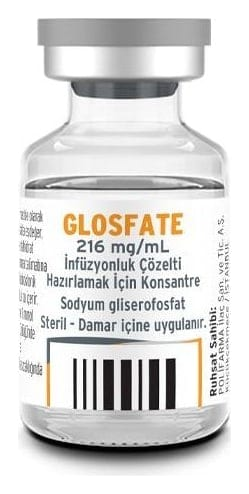

Glosfate 216 mg/mL İnfüzyonluk Çözelti Hazırlamak İçin Konsantre (10 Adet)

Ne için kullanılır
KT · Bölüm 1GLOSFATE; vücut için gerekli olan fosfat bileşiklerini içeren berrak, renksiz ve gözle görülebilir partikül içermeyen konsantre bir çözeltidir. Kutuda; 10 adet, bromobutil tıpa ve alüminyum flip-off kapak ile kapatılmış, tip I cam flakon şeklinde piyasaya sunulmaktadır. GLOSFATE; yetişkinlerin ve bebeklerin damar yoluyla beslenmesinde fosfat gereksinimi karşılamak üzere destekleyici olarak kullanılır.